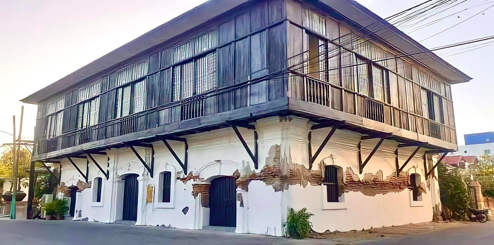

Balay San Nicolas
Formerly known as Valdez-Lardizabal House, Balay San Nicolas is one of the oldest heritage houses in San Nicolas, Ilocos Norte. This destination in Ilocos Norte holds remarkable cultural, artistic, and historical importance for the country, designated as an Important Cultural Property by the National Museum in 2015.